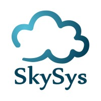

Proyectos
Proyecto Final UDI II - Portfolio Personal

Sitio web semántico y responsive desarrollado con HTML5, CSS3 y
JavaScript, alojado en GitHub Pages. Incluye estructura accesible,
control de versiones con Git y despliegue continuo.
Tecnologías: HTML, CSS, JavaScript, Git, GitHub
Pages
Ver proyecto en vivo
Diagnóstico y Reparación de PC (Linux-Oriented)
Diagnóstico de hardware, clonación de discos (dd, Ghost) y
recuperación de particiones (GParted, SystemRescue) en entornos
Linux/Windows - Análisis de tráfico: latencia y rendimiento en redes
IP empleando herramientas de línea de comandos (ping, traceroute,
iperf3). habilidades directamente aplicables a troubleshooting de
nivel Tier 1.
Institución: Instituto Superior Zona Oeste (2025)
Hacking Ético - Laboratorios de Pentesting
Formación intensiva en Ethical Hacking cubriendo el ciclo completo
de pentesting (recon → explotación → post-explotación → escalada de
privilegios → reporting), con explotación práctica de CVEs reales
(Drupalgeddon2), vulnerabilidades web (SQLi, XSS, IDOR, File Upload,
SSTI) y técnicas de privilege escalation en Linux, usando Nmap,
Metasploit, Burp/manual testing, sqlmap, Hydra y LinPEAS.
Institución: Instituto Superior Zona Oeste (2026)
Workshop: "Desarrollo con Agentes de IA"
Workshop práctico de uso de inteligencia artificial generativa y
agentes de IA aplicados al desarrollo de software. Se abordan
herramientas basadas en modelos de lenguaje que pueden integrarse en
las distintas etapas del desarrollo: análisis de requisitos, diseño,
programacion, testing, debugging, documentacion y mantenimiento.
Institución: Instituto Superior Zona Oeste (2026)
Atención al Cliente y Gestión de Accesos
Experiencia en COTO C.I.C.S.A gestionando validación de identidad,
resolución de conflictos bajo presión y manejo simultáneo de
múltiples solicitudes — base directa para tareas de gestión de
accesos de usuario (user access management).
Lugar de Trabajo: COTO C.I.C.S.A (2025-2026)
Systems Analysis & Documentation
Pollo Abasto Tu Almacén — Análisis de sistemas y documentación
técnica: redacción de Requisitos Funcionales, Reglas de Negocio,
Casos de Uso, Diagramas de Clases y Diccionarios de Datos. Modelado
de base de datos: diseño de modelos relacionales y Diagramas
Entidad-Relación (DER) con conceptos de SQL Server para gestión de
inventario y ventas. Fase de implementación planificada: desarrollo
futuro con Visual Basic conectado a una base de datos SQL Server,
usando Git/GitHub para control de versiones.
Institución: Instituto Superior Zona Oeste (2026)
Sobre la Empresa: Sky Systems, Inc. (SkySys)

SkySys es una empresa de consultoría tecnológica, ingeniería y
servicios de staffing, fundada en 2011. Actualmente cuenta con
entre 201 y 500 empleados y ayuda a clientes de Norteamérica a
formar equipos técnicos de forma local y global en más de 100
países.
La vacante a la que apliqué es para
Technical Support Specialist (Tier 1), un puesto
100% remoto para candidatos de toda Argentina, con jornada
completa (8 hs/día, lunes a viernes).
Por qué mi perfil encaja con este rol
| Lo que pide SkySys |
Lo que yo aporto |
| Troubleshooting y resolución de incidentes |
Formación en diagnóstico de hardware, redes y Ethical Hacking
|
| Soporte a plataformas SaaS y web |
Base en HTML, CSS, JavaScript y desarrollo de software |
| Manejo de tickets (Jira Service Management) |
Familiaridad con Jira Service Management |
| Comunicación vía Microsoft Teams y email (95%) |
Inglés B1 certificado, lectura y escucha B2 |
| Gestión de accesos de usuario y permisos |
Experiencia en validación de identidad y atención al cliente
(COTO)
|
| Aprendizaje rápido de sistemas nuevos |
Estudiante activo en Tecnicatura de Desarrollo de Software
|
Responsabilidades Clave del Puesto
-
Brindar soporte técnico a aplicaciones SaaS, web e internas
desarrolladas a medida.
-
Resolver incidentes de configuración, permisos y acceso de usuarios.
-
Gestionar y documentar solicitudes de soporte mediante Jira Service
Management.
-
Escalar problemas complejos a los equipos técnicos correspondientes.
-
Comunicarse con usuarios principalmente por Microsoft Teams y correo
electrónico.
-
Contribuir a la documentación de soporte y artículos de base de
conocimiento.
Requisitos Solicitados
-
2+ años de experiencia en soporte técnico, help desk o áreas afines.
- Sólidas habilidades de resolución de problemas y diagnóstico.
-
Experiencia con plataformas de gestión de tickets (Jira, ServiceNow,
Zendesk o similares).
- Buena comunicación escrita y verbal.
-
Capacidad de aprender nuevas herramientas y sistemas rápidamente.
Requisitos Deseables (Preferred)
-
Experiencia con WordPress u otro sistema de gestión de contenidos
(CMS).
-
Conocimientos de administración de accesos y permisos de usuario.
- Familiaridad con Jira Service Management.
-
Soporte a plataformas de contenido web o publicaciones digitales.
Perfil Ideal según SkySys
La empresa busca un perfil con curiosidad técnica y orientación al
servicio, que tenga una base sólida en soporte al usuario y
troubleshooting, y esté buscando crecer y expandir sus habilidades
técnicas. Aclaran explícitamente que no hace falta venir de un rol
Tier 2 tradicional — perfiles de Service Desk, Application Support o
soporte SaaS con buen criterio y comunicación también son bienvenidos.
Nota: este proyecto es un trabajo académico de adaptación de CV
(UDI II). No representa una afiliación real con Sky Systems,
Inc.